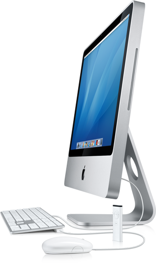

Nieuwe computer
zaterdag 1 september 2007
Ik ben toe aan een nieuwe computer. Het wordt een iMac 24″.
Mijn vier jaar oude Power Mac G5 was de ideale brug van Windows naar Mac. Elke dag geniet ik nog van de souplesse en de kracht van Mac OS X. Ik zou het met niets meer willen ruilen. Zeker niet als ik zie hoe mijn Dell PC worstelt met Windows Vista (ik ga er weer XP opzetten, denk ik). Nee, vergelijken heeft weinig zin meer…
De Power Mac is nota bene nog verkocht voor 650 EUR. Niet slecht!
Vier jaar geleden was er geen haar op mijn hoofd dat er aan dacht om ooit een alles-in-één computer te kopen. Je was je vrijheid kwijt: geen add-on kaarten, geen harde schijven wisselen, geen processor updates,… De realiteit van de voorbije jaren doet me echter inzien dat eenmaal ik een computer koop, ik die nooit meer opengooi (hoe intrigerend zo’n ervaring bij een Power Mac ook is). Bovendien heeft het design van de iMac een aantal niet te onderschatten voordelen: het is erg compact, er is nauwelijks een draad te bespeuren, een micro en camera zijn standaard ingebouwd én het toestel is bij-zon-der stil. Ik mag daar ook wel aan toevoegen dat de nieuwe iMac een juweeltje is dat op geen enkele bureau zou misstaan (de zwarte rand is een voltreffer!).
Ik opteer meteen voor de zwaarste configuratie: 24″ scherm, 2.8Ghz Core 2 Duo, 4GB RAM. Zodra de nieuwste versie van Mac OS X uit is (aka ‘Leopard‘), plaats ik mijn bestelling. Dat zou ergens in oktober moeten zijn. Ik ben ook wel benieuw naar hoe vlot Fusion (lees: Windows, zonder de rommel) het zal doen. Ik heb ook al altijd eens met Ubuntu willen spelen. Tik tok, tik tok… can’t wait.
De koning is dood: de PowerMac G5 (2004)
Processor: Dual 1.8 Ghz PowerPC G5
L2 Cache: 512Kb per CPU
Systeembus: 900MHz
Geheugen: 1GB DDR SDRAM (2 x 512Mb)
Grafische kaart: ATI Radeon 9600 Pro, 64MB
Harde schijf: Maxtor Serial ATA 7200-rpm 152GB
Optisch: PIONEER DVD-RW DVR-106D
Connectiviteit: Bluetooth
Gebouwd: tussen 23 en 29 februari 2004 (Cork, Ireland)
Serienummer: CK409H1SQEU
XBench: 90.57 (v. 1.3)
Geekbench: 1621 (v. 2.0.5)
Leve de koning: de nieuwe iMac (2008)
Processor: 2.8GHz Intel Core 2 Extreme
L2 Cache: 4MB shared
Systeembus: 800MHz
Geheugen: 4GB PC2-5300 (667MHz) DDR2
Grafische kaart: ATI Radeon HD 2600 PRO, 256MB GDDR3
Harde schijf: Serial ATA 7200-rpm 500GB
Optisch: 8x SuperDrive (DVD±R DL/DVD±RW/CD-RW)
Connectiviteit: Bluetooth 2.0+EDR, Wifi (802.11n)
Extra’s: iSight camera, 24″ scherm
Prijs voor al dat moois: 2808 € – 21% BTW = 2218,32 € – 650 € (oude Mac) = 1568,32 €
Update (10 okt): Ik kon het niet aan om te wachten op Leopard. Hij is binnen!
